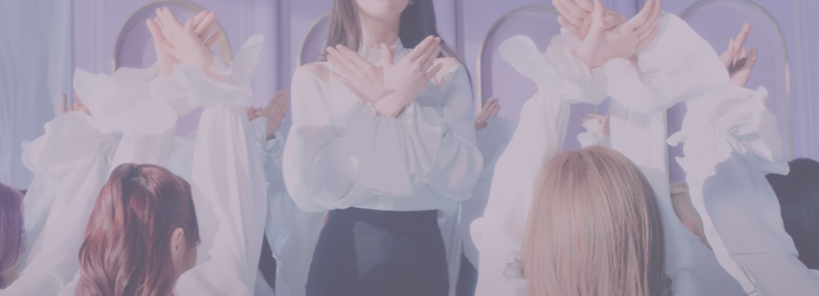

Welcome to the Mobius strip
LOONA, short for "Girl of the Month", girl group formed by Blockberry Creative.
Known for their unique concept of each member representing a different month,
the group has garnered significant attention for their diverse musical styles and elaborate storytelling.
Debuting in 2016, LOONA embarked on a unique pre-debut project,
releasing solo and sub-unit albums for each member to showcase their individual talents and personalities.
This extensive project not only built anticipation for their official debut
but also allowed fans to become familiar with each member's distinct style and abilities.
Almost all of LOONA's pre-debut music videos have some importance to the lore of the LOONAVERSE .
Since everything is up to interpretation, each music video will be broken down by the most popular orbit theories,
and we will attempt to summarize complex and vast theories into a single article, while also adding other information
to help contextualize and stitch together a concise theory that most Orbits and theorists can agree on.

*****************************
The loonaverse plays with several vast areas of storytelling, what starts off as a simple storyline, extends through
genres such as the bible and psychology.
In this master document we plan to gather all information related to the loonaverse, divided into three halves,
the solo portfolios,the three subunits (loona 1/3, odd eye circle, YYXY) as well as mischellenous subunits( BE-LI-BE unit,
odd eye circle+, ARTMS, Loona assemble), and finally loona as a group (loonatheworld, dlrowehtanool) in 3 different
webpages linked in the header.
The LOONAVERSE is a universe that exists on a möbius strip. The members of LOONA 1/3 reside on earth and portray
realistic girls that can be found on streets or at schools. ODD EYE CIRCLE lives between earth and space,
aka the middle earth.
They display changing and mutative characteristics while suggesting love should be taken control of
instead of being passive. Lastly, yyxy inhabit a 'utopia', known as 'Edenism',
beyond earth and the middle earth. They decide to escape their 'Eden' in order to discover themselves.
Each member of LOONA plays a character in the LOONAVERSE by the same name.
These are descriptions of each member and how they impact the LOONAVERSE based on
the internet's most popular LOONAVERSE theorists.
Theories:Masterlink, Buy:merchandise, Support:Creation.